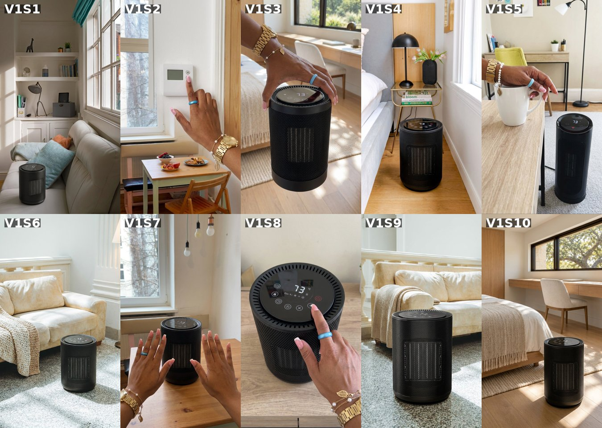
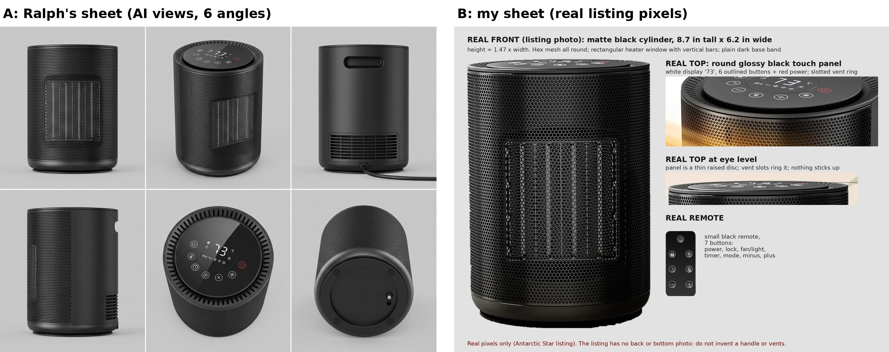
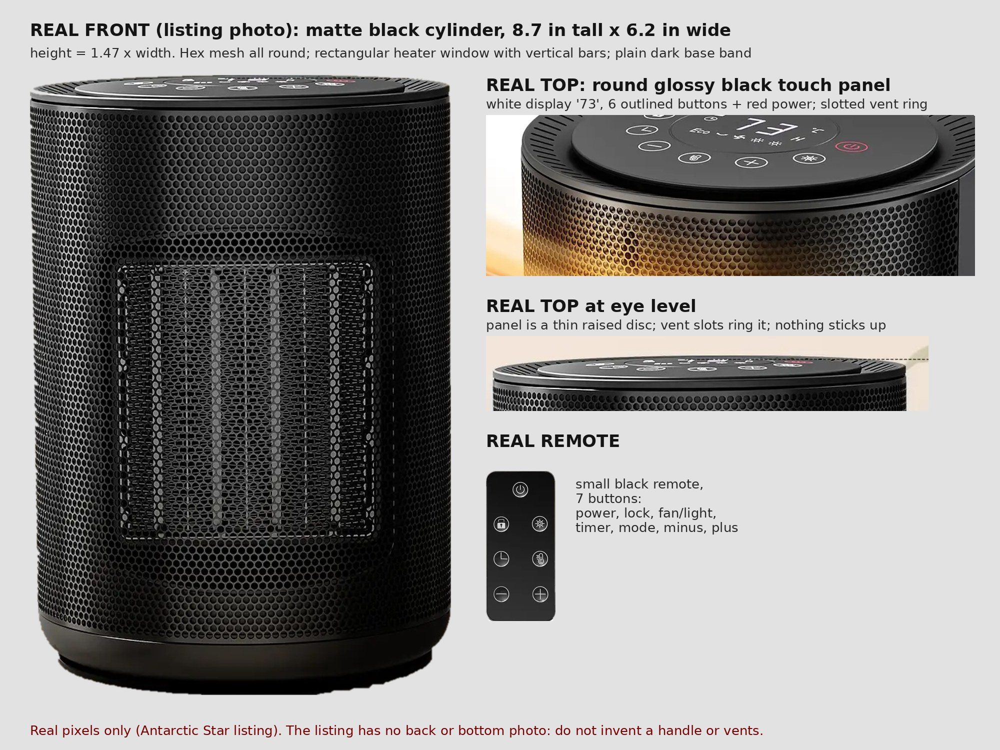
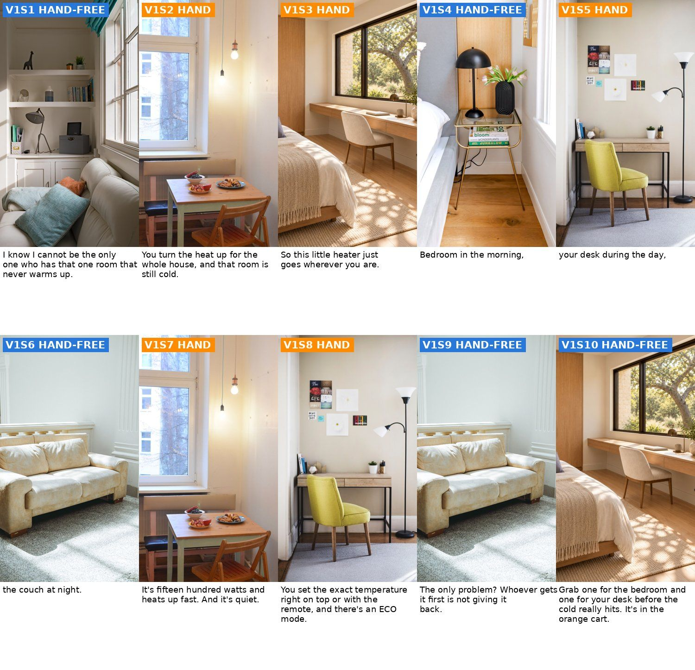

<title>Space Heater Ads Review</title>
<meta name="claude:viewport-fit-sides" content="cover">
<link rel="stylesheet" href="https://fonts.googleapis.com/css2?family=Fraunces:opsz,wght@9..144,600&family=Work+Sans:wght@400;500;600&display=swap">
<style>
/* layout: one reading column, decision block first, media full-width inside it */
:root{--bg:#f6f5f2;--card:#ffffff;--fg:#1d1f22;--muted:#5d6268;--line:#dcdad4;--accent:#c4501b;--hand:#e07a1f;--free:#2f6fc0;--ok:#2d7d46;
--display:"Fraunces",Georgia,serif;--body:"Work Sans",system-ui,sans-serif}
@media (prefers-color-scheme:dark){:root:not([data-theme="light"]){--bg:#17181a;--card:#202225;--fg:#ecebe7;--muted:#a3a7ad;--line:#34363a;--accent:#f0804c;--hand:#f0963f;--free:#6aa3ea;--ok:#5cc07a;color-scheme:dark}}
:root[data-theme="dark"]{--bg:#17181a;--card:#202225;--fg:#ecebe7;--muted:#a3a7ad;--line:#34363a;--accent:#f0804c;--hand:#f0963f;--free:#6aa3ea;--ok:#5cc07a;color-scheme:dark}
body{background:var(--bg);color:var(--fg);font:16px/1.55 var(--body);padding-left:max(16px,env(safe-area-inset-left,0px));padding-right:max(16px,env(safe-area-inset-right,0px));padding-block:24px 48px}
main{max-width:980px;margin:0 auto;display:grid;gap:28px}
h1,h2,h3{font-family:var(--display);font-weight:600;text-wrap:balance;margin:0}
h1{font-size:2rem}h2{font-size:1.45rem}h3{font-size:1.15rem}
p{margin:0}.muted{color:var(--muted)}
.card{background:var(--card);border:1px solid var(--line);border-radius:10px;padding:18px;display:grid;gap:12px;min-width:0}
.decide{border-left:4px solid var(--accent)}
ol,ul{margin:0;padding-left:1.2em;display:grid;gap:6px}
img{display:block;width:100%;height:auto;border-radius:6px;border:1px solid var(--line)}
figure{margin:0;display:grid;gap:6px}figcaption{font-size:.85rem;color:var(--muted)}
.two{display:grid;grid-template-columns:1fr 1fr;gap:14px}@media(max-width:700px){.two{grid-template-columns:1fr}}
.scroll{overflow-x:auto}
table{border-collapse:collapse;width:100%;font-size:.9rem}th,td{text-align:left;vertical-align:top;padding:8px;border-bottom:1px solid var(--line)}
th{font-size:.75rem;letter-spacing:.06em;text-transform:uppercase;color:var(--muted)}
td.num{text-align:right;font-variant-numeric:tabular-nums;white-space:nowrap}td.id{font-weight:600;white-space:nowrap}
.pill{display:inline-block;font-size:.72rem;font-weight:600;letter-spacing:.04em;padding:2px 8px;border-radius:99px;color:#fff;white-space:nowrap}
.pill.h{background:var(--hand)}.pill.f{background:var(--free)}
.tag{font-family:var(--body);font-size:.75rem;font-weight:600;color:var(--accent);margin-left:6px}
blockquote{margin:0;padding:12px 14px;background:var(--bg);border-radius:8px;font-size:1rem}
.vid{display:grid;gap:12px}.ok{color:var(--ok);font-weight:600}
.total td{font-weight:600;border-top:2px solid var(--fg)}
</style>
<main>
<header style="display:grid;gap:6px">
<p class="muted">Grace · Antarctic Star 1500W PTC heater (black, touchscreen) · 2026-10-19 · round 2 (stills)</p>
<h1>Space heater: hands-only video</h1>
<p class="muted">Nothing paid yet. This page is the plan, the reference-sheet comparison and the free room picks.</p>
</header>

<section class="card decide" id="stills">
<h2>Stills, round 1 (paid $0.90)</h2>
<p>All 10 came back. My full-size check: <strong>4 OK, 6 need a redo</strong>. Please check whether I missed anything.</p>
<figure><figcaption>Round 1 stills, in shot order. Tap to zoom.</figcaption></figure>
<div class="scroll"><table><thead><tr><th>#</th><th>Verdict</th><th>What I found</th></tr></thead><tbody><tr><td class="id">S1</td><td><span class="pill h">REDO</span></td><td>The heater sits ON the sofa seat. A heater on a cushion is a fire risk and breaks my own safety rule. Fix: on the floor, two feet clear.</td></tr><tr><td class="id">S2</td><td><span class="pill h">REDO</span></td><td>The bracelet came out as a gold WATCH with a face (Grace&#x27;s is a link bracelet), and the nails are solid pink, not French tips. Fix: &#x27;bracelet only, no watch face&#x27;.</td></tr><tr><td class="id">S3</td><td><span class="pill h">REDO</span></td><td>Same watch face on the wrist, and a strip of forearm shows at the left. Fix: the hand comes from the top edge with a real grip on the rim, hand and wrist only.</td></tr><tr><td class="id">S4</td><td><span class="pill f">OK</span></td><td>Heater on the floor by the nightstand, shape and top panel right, nothing touching it.</td></tr><tr><td class="id">S5</td><td><span class="pill h">REDO</span></td><td>Wrong product: a tall tower heater, not the short cylinder. And the hand rests on the mug rim instead of holding the handle. Fix: &#x27;twice the height of a mug, not a tower&#x27;, fingers through the handle.</td></tr><tr><td class="id">S6</td><td><span class="pill f">OK</span></td><td>Heater on the rug, throw on the sofa arm, a safe gap.</td></tr><tr><td class="id">S7</td><td><span class="pill h">REDO</span></td><td>Watch face on the left wrist, and the hands fill half the frame. Fix: no watch, hands smaller than the heater.</td></tr><tr><td class="id">S8</td><td><span class="pill h">REDO</span></td><td>Top panel has an X button and other icons the real one doesn&#x27;t have (copied from the AI sheet). Fix: real panel crop only, no AI sheet for this close-up.</td></tr><tr><td class="id">S9</td><td><span class="pill f">OK</span></td><td>Heater on the rug in front of the sofa, right shape.</td></tr><tr><td class="id">S10</td><td><span class="pill f">OK</span></td><td>One heater on the bedroom floor, right shape (end shot shows one product).</td></tr></tbody></table></div>
<p><strong>Redo 6 stills: 6 x $0.09 = $0.54.</strong> Prompts are already fixed. Running total if yes: $0.90 + $0.54 = $1.44 of the $2.13 plan, so the job would end about $0.54 over the quote (the plan had no redo budget).</p>
</section>
<section class="card">
<h2>Plan (approved)</h2>
<ol>
<li><strong>Approve V1</strong> (below): 10 shots, about 35 s, <strong>$2.13 Kie</strong> + ~160 Kling credits. Your Kie balance ($2.49) covers it, so no top-up needed.</li>
<li><strong>Hands:</strong> Grace's "with bracelet" sheet also shows her other rings (crown stack, heart, solitaire). Only the bracelet + blue birthstone ring (my default), or keep them all?</li>
<li><strong>Variant:</strong> confirm Grace's sample is the black touchscreen one (the listing also sells a knob model and an auto-oscillation model).</li>
</ol>
<p class="muted">Why V1: your brief is different rooms and lots of motion, and V1 is built on rooms (bedroom, desk, couch), one per line. It also matches the two top heater sellers (@myfamilypov 765K and @shun50111 115K, who list where you use it) and the most-searched need ("space heater for bedroom", "for office"). V2 (safety) and V3 (6 a.m. humor) are dropped.</p></section>

<section class="card">
<h2>Reference sheets: yours vs mine</h2>
<figure><figcaption>A: your sheet (AI, 6 angles). B: mine, built from the real listing photos only (free).</figcaption></figure>
<div class="two">
<div><h3>Yours is better at</h3><ul>
<li>Every angle (back, side, bottom, top-down) in clean grey light, no orange glow. The image model gets the shape from all sides.</li>
<li>Proportions are right: height 1.44 x width vs the real 1.47.</li></ul></div>
<div><h3>Mine is better at</h3><ul>
<li>The real top panel: 6 outlined buttons + red power and the "73" display. Yours adds buttons that are not on the real one (an X and a snowflake).</li>
<li>The real remote (yours has none).</li>
<li>Nothing invented: the back handle slot, rear vent and bottom switch on yours are not in the listing, so they may be wrong.</li></ul></div>
</div>
<p><strong>Verdict:</strong> for the parts on screen most (front, top panel, remote) mine is more accurate, so you don't need to send one. The listing never shows the back or bottom; when a shot needs those, I'd make the extra angles from my sheet with one Gemini still ($0.09, asked first). For this job I pass both: mine as the real product, yours for shape only.</p>
<figure><figcaption>My sheet at full size.</figcaption></figure>
</section>

<section class="card">
<h2>The video (V1)</h2>
<p class="muted">Grace C voiceover. Hands from the frame edge with grip, no forearm. No on-screen text. Every shot moves (Seedance hand clips, Kling camera moves). 6 free stock rooms from Pexels and Pixabay (picked from 101; licences in rooms/SOURCES.md). Some rooms have warm sun: I'll prompt neutral daylight and grade bright and neutral.</p>
<section class="vid" id="v1"><h3>V1 · One cold room <span class="tag">hook H063</span></h3><p class="muted">Rooms tour: bedroom, desk, couch. Modeled on @myfamilypov (765K) and @shun50111 (115K). About 114 words, ~36 s.</p>
<blockquote>I know I cannot be the only one who has that one room that never warms up. You turn the heat up for the whole house, and that room is still cold. So this little heater just goes wherever you are. Bedroom in the morning, your desk during the day, the couch at night. It&#x27;s fifteen hundred watts and heats up fast. And it&#x27;s quiet. You set the exact temperature right on top or with the remote, and there&#x27;s an ECO mode. The only problem? Whoever gets it first is not giving it back. Grab one for the bedroom and one for your desk before the cold really hits. It&#x27;s in the orange cart.</blockquote><figure><figcaption>Free layout: the room each shot uses (blue = hand-free, orange = hand). The paid stills put the heater and Grace's hand in.</figcaption></figure>
<div class="scroll"><table><thead><tr><th>#</th><th>Type</th><th>Line</th><th>What we see / motion</th></tr></thead><tbody><tr><td class="id">S1</td><td><span class="pill f">HAND-FREE</span></td><td>I know I cannot be the only one who has that one room that never warms up.</td><td class="muted">Wide view of the window nook: the heater stands on the bare wood FLOOR about two feet in front of the sofa, never on the sofa or any cushion, nothing touching it, soft daylight from the window.<br><em>Slow walk-in dolly from the doorway toward the heater, slight handheld feel. Only the camera moves.</em></td></tr><tr><td class="id">S2</td><td><span class="pill h">HAND</span></td><td>You turn the heat up for the whole house, and that room is still cold.</td><td class="muted">A plain white digital wall thermostat on the wall beside the breakfast table; the index finger presses its up arrow. No heater in this shot.<br><em>The finger presses the thermostat up arrow twice, then the hand leaves the frame to the right. The camera holds steady.</em></td></tr><tr><td class="id">S3</td><td><span class="pill h">HAND</span></td><td>So this little heater just goes wherever you are.</td><td class="muted">One hand comes in from the top edge of the frame and carries the heater by its top rim: thumb on one side, fingers curled around and under the rim on the other side, a real grip; the heater hangs a few inches above the bedroom floor. Only the hand and wrist are in frame, no arm.<br><em>The hand carries the heater slowly to the right, keeping it upright and at the same distance from the camera; the camera pans with it.</em></td></tr><tr><td class="id">S4</td><td><span class="pill f">HAND-FREE</span></td><td>Bedroom in the morning,</td><td class="muted">The heater stands on the wood floor next to the gold nightstand, morning light.<br><em>Slow low arc around the heater from left to right. Only the camera moves; the room stays still.</em></td></tr><tr><td class="id">S5</td><td><span class="pill h">HAND</span></td><td>your desk during the day,</td><td class="muted">The heater stands on the floor beside the desk and the yellow chair. It is SHORT: 8.7 inches tall, about twice the height of a coffee mug, a squat cylinder, NOT a tall tower. On the desk, the hand sets down a white coffee mug, index and middle fingers through the mug handle and the thumb on top of it.<br><em>The hand puts the mug down and slides out of frame; the camera slowly pushes in toward the heater.</em></td></tr><tr><td class="id">S6</td><td><span class="pill f">HAND-FREE</span></td><td>the couch at night.</td><td class="muted">The heater stands on the rug in front of the cream sofa, a knit throw on the sofa arm, soft lamp light plus daylight (still bright).<br><em>Slow sideways truck past the sofa toward the heater. Only the camera moves; the rug and sofa stay still.</em></td></tr><tr><td class="id">S7</td><td><span class="pill h">HAND</span></td><td>It&#x27;s fifteen hundred watts and heats up fast. And it&#x27;s quiet.</td><td class="muted">The heater stands on the breakfast table; both hands come in from the bottom edge, palms open toward the heater a few inches from the mesh, not touching it; only hands and wrists in frame, the hands no bigger than the heater.<br><em>The hands rub together slowly, then hold open toward the heater again. The heater and the table do not move.</em></td></tr><tr><td class="id">S8</td><td><span class="pill h">HAND</span></td><td>You set the exact temperature right on top or with the remote, and there&#x27;s an ECO mode.</td><td class="muted">Close top-down view of the heater&#x27;s touch panel on the desk, exactly the REAL panel in reference image 5: a white &#x27;73&#x27; display in the centre, six small white-outlined round buttons in an arc on the left and lower edge, and one red power button on the right; no X button, no snowflake button. The index fingertip touches one outlined button on the lower edge.<br><em>The fingertip taps the plus button twice, the display stays lit, the finger lifts away. Camera fixed, very slight push-in.</em></td></tr><tr><td class="id">S9</td><td><span class="pill f">HAND-FREE</span></td><td>The only problem? Whoever gets it first is not giving it back.</td><td class="muted">Closer view from a low angle: the heater on the rug, the cream sofa and knit throw behind it.<br><em>Slow push-in on the heater. Only the camera moves.</em></td></tr><tr><td class="id">S10</td><td><span class="pill f">HAND-FREE</span></td><td>Grab one for the bedroom and one for your desk before the cold really hits. It&#x27;s in the orange cart.</td><td class="muted">ONE heater on the bedroom floor in the sun patch near the bed, the desk and window behind.<br><em>Slow pull-back and slight rise, ending on a calm wide view. Only the camera moves.</em></td></tr></tbody></table></div></section>
</section>

<section class="card">
<h2>Cost and time</h2>
<div class="scroll"><table><thead><tr><th>Item</th><th>Count</th><th>Each</th><th>Total</th></tr></thead><tbody>
<tr><td>Stills, Gemini 3 Pro Image on Kie (product from my sheet, no pasted label)</td><td class="num">10</td><td class="num">$0.09</td><td class="num">$0.90</td></tr>
<tr><td>Hand clips, Seedance 2.0 Mini reference mode, 5 s</td><td class="num">5</td><td class="num">$0.205</td><td class="num">$1.025</td></tr>
<tr><td>One Seedance hand-free clip to test against Kling (your rule)</td><td class="num">1</td><td class="num">$0.205</td><td class="num">$0.205</td></tr>
<tr class="total"><td>Kie total</td><td></td><td></td><td class="num">$2.13</td></tr>
<tr><td>Hand-free clips, Kling 3.0 on your account (credits checked before and after)</td><td class="num">5</td><td class="num">~32 cr</td><td class="num">~160 cr</td></tr>
<tr><td>Grace C voiceover, ElevenLabs</td><td class="num">1</td><td></td><td class="num">580 chars</td></tr>
</tbody></table></div>
<p><strong>Order:</strong> ONE test still first (V1S3, the hand carrying the heater, the riskiest), checked at full size. Then all stills as a storyboard for you <em>before any video spend</em>. Then the riskiest clip + the Kling vs Seedance test, then the batch, then cuts with QC, the compare check and the AI finish.</p>
<p><strong>Time after your OK:</strong> stills ~15 min, test clips ~15 min, batch ~20 min, cut + QC ~30 min. About 1.5 hours, with 2 review stops for you.</p>
</section>

<section class="card">
<h2>Checks done</h2>
<ul>
<li><span class="ok">Script gate OK</span>: audience research (1,226 search phrases, 257 TikTok comments), coach shop/tag/viral board, 6 winner videos broken down, product facts, hook H063 from the library word for word, Humanizer, reading grade 2.9.</li>
<li>Reddit was tested and blocks this cloud server (403), so the real quotes come from the product's reviews and TikTok comments.</li>
<li><strong>Listing conflicts</strong> (flagged, not used): temperature range 40-86°F in the title vs 60-87°F and 41-95°F on the images; 36 dB vs 45 dB; "5 heat modes" vs 3 shown. The scripts say "the exact temperature", "quiet" and "ECO mode" with no numbers.</li>

<li>Safety in the shots: the heater sits on the floor or a hard surface, nothing touching it, never in a bathroom by water. No fake orange heat streaks.</li>
</ul>
</section>
</main>
